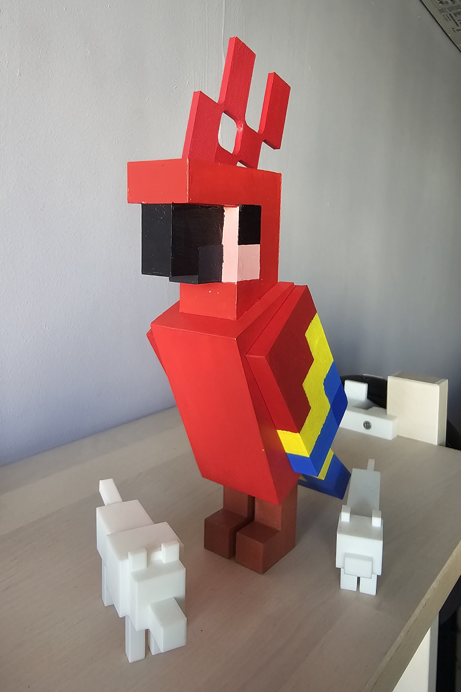

3D Printing my dream setup into reality! ˚☽˚.⋆

I'm in the midst of upgrading my desk area. I'm pretty proud of how far its come! The photos really don't do it justice, and I wish I could do a before and after, but I'm too lazy to tear everyone down and put it back up.
I'll start recording more of the little things from now on!
3D Printed Parrot 𓅪
I got a bit bored and 3D Printed a Minecraft Parrot and then painted it. Note to self: Maybe sand down the sides before painting in the future?
I also did a couple smaller animals earlier, won't be painting them cuz i'm too lazy ‎( ꜆-ࡇ-)꜆
My Summer Car ō͡≡о
My friend did this fantastic blog about it so I'm not gonna talk about it again, but what I will do is link the video I made hehe
The Boys Head to Gunung Lambak
This Summer, the boys and I headed over to the city of Kluang to scale a 500m tall hill. Here's how it went.